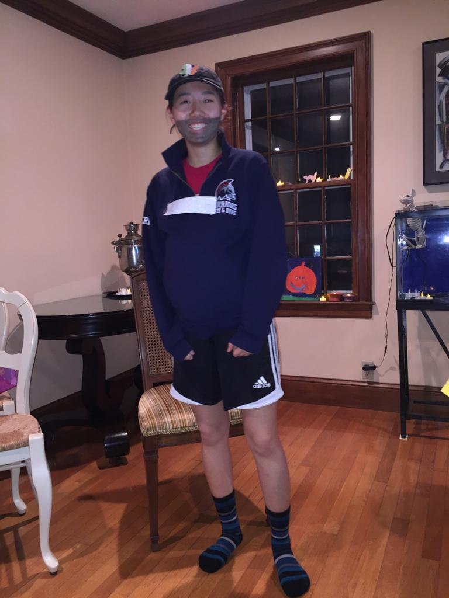

Sport: Swimming
I've been swimming competitively since I was ten years old! I started off swimming for my town's team, the Brookline Dolphins, but admittedly I wasn't very good. The picture you see above is me in high school, years later, having improved much compared to when I first began, with my lanemates. We used to all practice in the same lane, so we got pretty close that year (I believe it was my Sophomore year).
For swim meets in high school, partially in order to bond as a team and partially to let friends and classmates know that there was a swim meet that day, we had to do something called "spirit". We dressed up according to some theme or another, which was decided by the captains/seniors, and usually also painted black stripes onto our faces. As far as I know, the black lines originate from footballers doing it, I think to keep the sun from reflecting off their cheeks maybe? Whatever it was, it wasn't totally necessary for our team's success at the meet in any particular way - it just made us feel cool. And I think we looked it too! The first picture was a day where the theme was "Find My Twin"; we were paired/grouped up, and decided an outfit to wear. Then, the next day we'd wear that outfit and pin a "Find My Twin" sign to our shirts. Later on people told me that my pair was pretty obvious, though, since we were the only ones wearing leather jackets. The second picture was onesie day, which is pretty self-explanatory I think; I'm wearing a Stitch onesie!
Every year, the team would have scheduled team-bonding days. One of these days was the weekend of Halloween! One of our teammates with space would host, and we would all bring food potluck-style, and dress up. There was also always an annual vote on whose costume was best. This was the year that I dressed up as my coach! He would always wear a baseball hat, or a hat with some sports team on it of some kind, plus shorts and a piece of swim-related upper-body-wear. Before I went I also took the time to shade in the outline of a beard with some eyeliner that I had! I also put a shirt into my sweater to (lightly) tease my coach about his belly. He grumbled some, but he did also laugh at my costume, so my laugh in this picture is me being relieved that I was in the clear. I won a small prize, too, since I came in second in the costume contest!
And here's me as a senior! It wasn't always easy to stick with swim through high school; my team was very competitive and my coach was ambitious, so for all four years we practiced 14 hours every week for three months straight, from the start of the season to the end. Often it was super tough and I would feel frustrated at hitting a plateau with my times/scores. But, and I hope this picture conveys this, I loved the sport regardless. It was hard, but even though my main stroke/event (100 yards Butterfly) was in my personal opinion one of the most difficult events, I really enjoyed competing and continously striving to improve myself. In the picture, I had just finished a long morning meet, and I'm wearing the jackets that are specially reserved for seniors.
That's all I've got! Swimming has been a huge part of my life for almost a decade now. I took a break in my freshman year at NYU to focus on academics, but I found that I started to miss it almost immediately. If COVID hadn't hit like a truck last year, I would almost definitely have been looking to join a team here at NYU, although maybe not our intercollegiate team but rather an intramural one.
For additional information, or the story of how she almost broke a high school record, please contact Charlie
here.